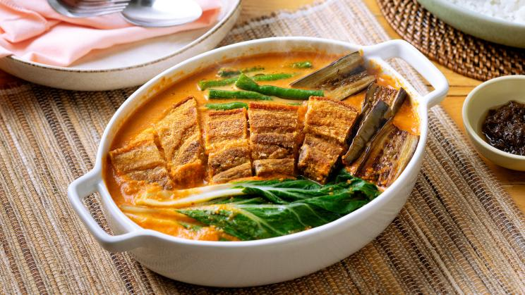

Kare-kare is a Philippine stew that features a thick savory peanut sauce. It is generally made from a base of stewed oxtail, beef tripe, pork hocks, calves' feet, pig's feet or trotters, various cuts of pork, beef stew meat, and occasionally offal. Vegetables, such as eggplant, Chinese cabbage, or other greens, daikon, green beans, okra, and asparagus beans, are added. The stew is flavored with ground roasted peanuts or peanut butter, onions, and garlic. It is colored with annatto and can be thickened with toasted or plain ground rice.